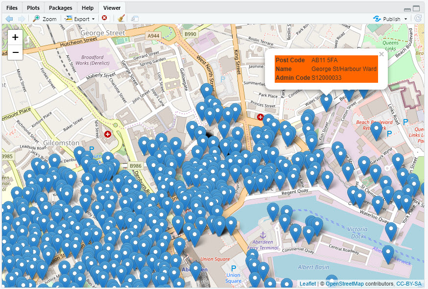

Plotting data on Maps with R
Putting data onto maps isn't really GIS, perhaps just a small subset of the GIS experience
In this session we will have a quick look at how we can put data onto maps in R.
We won't be learning any new R constucts, you can consider this as an exercise in making use of already existing R packages which you can download and install in your own R environment, if you don't already have them.
Using the Leaflet package to add data points
Leaflet is a mapping package originally written for Javascript. But there now exists R and Python ports of the package which are very popular.
If you don't already have the leaflet package installed, you can do so using the following command in the console.
install.packages("leaflet")
Alternatively you can use the RStudio GUI; packages | install and type in 'leaflet' in the second input box. You can let the other two boxes default to the values already in them.
To use the leaflet package in your script, you include the following line of code;
library(leaflet)
We are now in a position to use functions included in the leaflet package.
Like ggplot, leaflet, builds up the completed image in layers. We will demonstrate how this is done with the following code segments.
As we did with the dplyr examples we will chain the individual function calls together using the pipeline operator %>% provided by magrittr/
- Calling Leatlet() without any parameters or additions, essentially creates a blank canvas.
m <- leaflet() m
- If I include
addtiles(), but without any details of the tile that I’m interested in, then by default, I get a re-curring map of the world. Notice that the map is provided by Openstreetmaps. there is a more general function available calledaddProvidertiles()which allows you to select from a variety of map providers depending on the type of map you want. You can see some previes of them at this link: http://leaflet-extras.github.io/leaflet-providers/preview/
You should always cite the source of the map, although as you can see in the case of Openstreetmaps, this is done for you. The last thing to point out at this stage, if it is not obvious, is that you need an Internet connection for this to work.
m <- leaflet() %>% addTiles() m
- Using the setview() function you can set the centre of map and the zoom level, i.e how much detail you want.
# set a center for the map and an initial zoom level m <- leaflet() %>% addTiles() %>% setView(0, 51.478792, zoom = 12) m
- About the easiest thing you can do to a map is to add a simple popup with some data in it. In Leaflet this is done with the
addMarkers()function. You need to specify the longitude and latitude values for the popup as well as the data which is to be displayed. In this example we have used a simple string value.
popup_val <- "Hello Greenwich" m <- leaflet() %>% addTiles() %>% setView(0, 51.478792, zoom = 15) %>% addMarkers(lng=0, lat=51.478792, popup=popup_val) m
- The text for the popup is not limited to simple text. The string is interpreted as HTML so you can pass any valid HTML segment, such as a small table, allowing you to display formatted multiple items of text. Including in the example shown, hyperlinks.
# the text can be HTML which will be interpreted # in this case the text is in bold and there is a link to a web page popup_val <- "<b>Hello Greenwich</b><br><a href='https://greenwichmeantime.com/'>All about GMT</a>" m <- leaflet() %>% addTiles() %>% setView(0, 51.478792, zoom = 15) %>% addMarkers(lng=0, lat=51.478792, popup=popup_val) m
- It is more likely that you will want several or many popups to be displayed on your map and that this data is available to you in a file. In this example we are using a file containing approx. 5000 post codes from Aberdeen.
The file looks like this.

aberdeen <- read.csv("./data/Aberdeen_PC.csv") m <- leaflet() %>% addTiles() %>% setView(-2.096647861, 57.14822809, zoom = 12) %>% addMarkers(data = aberdeen, lng = ~ Long, lat = ~ Lat, popup = aberdeen$PC) m
This output is somewhat cluttered with nearly 5000 pop-ups on it. We will deal with this later.
- You can use any data you like providing that each observation contains all of the data you need as well as the Long/Lat information. This example is hand coded to show three items of information taken from the first observation in the postcode file used previously.
# quite often we want several items of info in the popup # we can do this by createing an HTML table structure and imbedding the required info. # in this example we have hand coded the data popup_val <- paste0("<table width='100%' cellspacing='2' cellpadding='0' border='0' align='center' bgcolor='#ff6600'> <tr> <td><b>Post Code</b></td> <td>AB10 1AA</td> </tr> <tr> <td><b>Name</b></td> <td>George St/Harbour Ward</td> </tr> <tr> <td><b>Admin Code</b></td> <td>S12000033</td> </tr> </table>") m <- leaflet() %>% addTiles() %>% setView(-2.096647861, 57.14822809, zoom = 15) %>% addMarkers(lng=-2.096647861, lat=57.14822809, popup=popup_val) m
- The next example combines the last two. Instead of hand coding a single popup we use the data in the file to create similar popups for all of the observations in the file.
At the same time instead of constructing the popup data on the fly, we could instead add the data as a new column in the data frame and then reference that in the popup when we call leaflet. The displayed map is the same, and we could save the augmented dataframe to a file for future use. Clearly this will add to size of the file, but it does make the coding a lot tidier.
aberdeen$popup <- paste0("<table width='100%' cellspacing='2' cellpadding='0' border='0' align='center' bgcolor='#ff6600'> <tr> <td><b>Post Code</b></td> <td>", aberdeen$PC, "</td> </tr> <tr> <td><b>Name</b></td> <td>", aberdeen$Name, "</td> </tr> <tr> <td><b>Admin Code</b></td> <td>", aberdeen$Admin, "</td> </tr> </table>") m <- leaflet() %>% addTiles() %>% setView(-2.096647861, 57.14822809, zoom = 15) %>% addMarkers(data = aberdeen, lng = ~ Long, lat = ~ Lat, popup = ~ popup) m

- Finally, you will have noticed that plotting nearly 5000 popup on a single map create a bit of a mess. Leaflet does provide a way of reducing the clutter using the
addCircleMarkers()function instead of theaddMarkers()function. In general this works the same way asaddMarkers(), there is an additional parameter which allows you to specify, how you want the popups to be clustered, but in our case the default is fine.
m <- leaflet() %>% addTiles() %>% setView(-2.096647861, 57.14822809, zoom = 15) %>% addCircleMarkers(data = aberdeen, lng = ~ Long, lat = ~ Lat, radius = 5, clusterOptions = markerClusterOptions(), popup = ~ popup) m
- The map in the viewer like all of the others is live. Clicking on a numbered circle expands it and eventually you can drill down to the individual pop-ups. You can save the viewer image from RStudio using the
exportdropdown in the viewr tab. If you save it as an image, it will be a static image. If you save it as an HTML file, then this will behave in the same active way as the viewer image.
Theleafletpackage does not have a builtin function for saving a map, but you can install themapviewpackage which does.
# install.packages("mapview") library(mapview) mapshot(m, url = "m.html")
Creating a Choropleth map with leaflet.
What is a Choropleth map?
A Choropleth map is one in which we use shaded areas of the map to represent some aspect of our data.
In our example we are going to use a parlimentry constituency map of England to create a 'pseudo' population density map.
Getting the data
In order to create a Chorpleth map we need data which depict areas of the map as polygons. Normally provided as a set of ordered pairs of co-ordinates where each pair gives a longitude and latitude value and the last pair matches the first pair to as to complete the polygon.
One of the most popular formats for providing theis polygon data is in a shp file.
This format was originally created by ESRI but is now used by many organisations providing mapping data. Certainly almost all R packages dealing with geographical mapping will be able to read a shp file.
The shp file we are going to use id from the UK Data Service and can be downloaded from this link England_parl_2011
A shp file is in fact a folder of files. When we unzip our downloaded file we have a folder called
'England_parl_2011_gen_clipped' containing;

The contents of a shp folder can vary, but will always contain a shp file, which contains the polygons and a dbf file which is essentially a small database file containing information about the polygons. In this case constituency names and an ONS provided code to uniquely identify the constituency.
The 'TermsAndConditions.html' has been added by the UK Data Service to provide citation information.
Creating the map
To create ouer map we are going to use the leaflet package and a package called rgdal which you should install if you do not have it. If you you installed mapview in the previous section, it will have automatically have installed rgdal for you.
library(rgdal) library(leaflet)
- The first line of code reads the . shp file. The dsn parameter is actually the folder name which contains the .shp file and the other files associated with it. The layer parameter gives the name of the .shp file. You do not specify the .shp extension. In most cases when you download a shape file you actually download the complete folder of files and the name of the shp file will typically match the name of the folder. Notice that in this case the folder name has a capital ‘E’ for England whereas the shp file has a lowercase ‘e’. Remember R is case sensitive.
england <- readOGR(dsn = "./data/England_parl_2011_gen_clipped", layer = "england_parl_2011_gen_clipped", encoding = "UTF-8")
- The coordinate system used in the polygons from the UKDS use the OS Eastern and Northerns system (six digit numbers) Although other mapping software such a QGIS can recognise and use theses coordinate values directly Leaflet cannot. They need to be converted into Longitude and Latitude values. The first line indicates that the coordinate system is the UK Grid system (as used by OS) and the second line transform the coordinates into Longitude and Latitude. This can be confirmed by looking at the co-ordinate values in the england data structure.
proj4string(england) <- CRS("+init=epsg:27700") # tells it to be UK Grid system england <- spTransform(england, CRS("+init=epsg:4326")) # converts to lat-long WGS84
- The next thing we need to do is to add some data that we want to display on the map. For this example I am going to make use of some information which is already provided in the spatial object, that is the area of the polygon. Essentially I am adding an
additional column (area) containing values of a continuous variable onto the data dataframe within the spatial object. You would want to add your own data at this point. You need to make sure that the data is associated with the correct polygon by ensuring that the observations are added in the correct order.
Once you have added your data you might optionally want to save your data and the coordinate conversion we made into a new shp file for future use.
england@data$area <- sapply(england@polygons, function(x) 1000*x@area) # writeOGR(england, "./data/england", "england", driver="ESRI Shapefile")
- This line of code simply sets the colour scheme for the map and the map legend. Ten bins are used in which to place the value of the area variable graduated from Yellow to Blue. (Other options are available)
pal <- colorQuantile(palette = "YlGnBu",domain = england@data$area, n = 10)
- The final step is to draw the map. In this example we have specified the data source in the call to Leaflet itself, the addTiles and setView functions are much the same as before, we have an addLegend function to add the legend in the bottom right of the canvas. The
addPolygonshas the effect of drawing all of the polygons on the map using colour (in this case red) and shading the polygons based on the value of the area and usingthe palette of colours and the bins we have previously stablished. The addPolygons also has a popup parameter which is used to show the constituency name. Clicking within any polygon will display the appropriate Constituency name.
leaflet(data = england) %>% addTiles() %>% setView(-1, 52, zoom = 7) %>% addLegend("bottomright", pal = pal, values = ~area, title = "Area size", opacity = 0.5) %>% addPolygons(fillColor = ~pal(area), fillOpacity = 0.5, color = "#FF0000", weight = 1, popup = england$name)
Exercise
Using the same code to generate the map, assign it to a variable and then save the output to an html file.
Solution - click me
Solution
parl_map <- leaflet(data = england) %>% addTiles() %>% setView(-1, 52, zoom = 7) %>% addLegend("bottomright", pal = pal, values = ~area, title = "Area size", opacity = 0.5) %>% addPolygons(fillColor = ~pal(area), fillOpacity = 0.5, color = "#FF0000", weight = 1, popup = england$name) library(mapview) mapshot(parl_map, url = "parl_map.html")